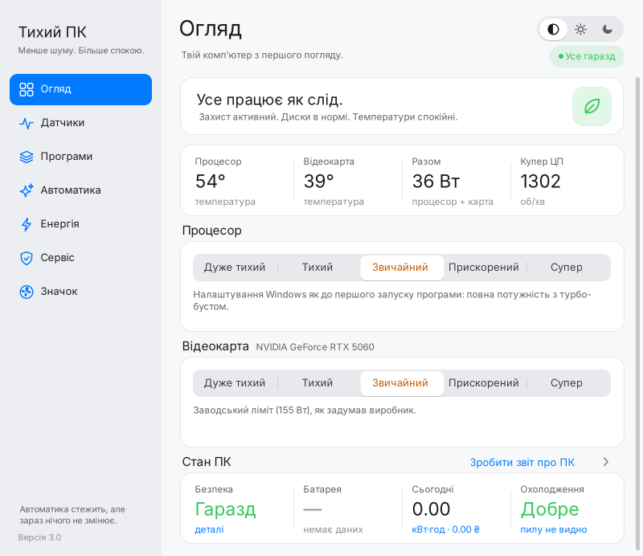
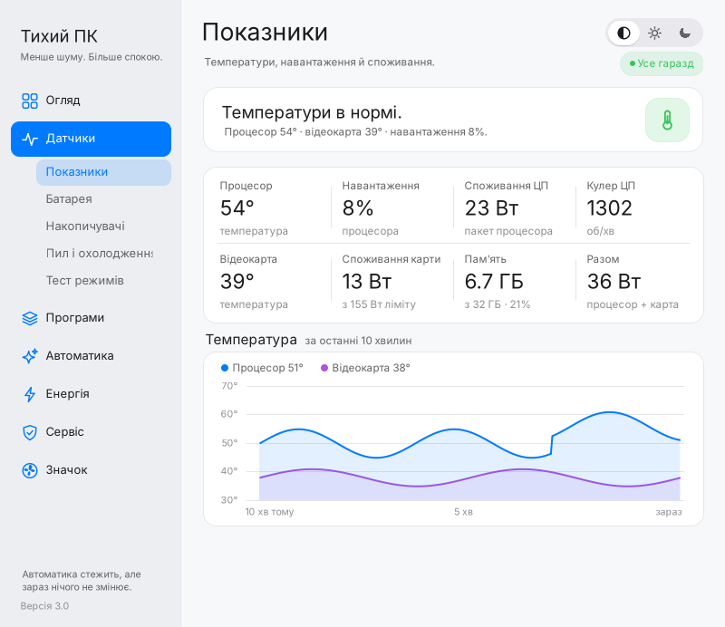

Тихий ПК
Одна кнопка — і процесор з відеокартою працюють тихіше й холодніше. А ще датчики, автоматика, підрахунок енергії, захист і сервіс — в одному гарному вікні.

Тиша — одним натиском.
П'ять режимів для процесора й відеокарти. Вибери, як має звучати твій ПК, — решту програма зробить сама.
Від «Дуже тихого» до «Супер».
Тихі режими обмежують турбо-частоти й ліміт потужності відеокарти — кулери крутяться повільніше, а температура падає. Коли треба швидкість — один клік, і повна сила повертається.

Усе, що треба. Нічого зайвого.
Кожен розділ — окрема сторінка з підказкою зверху: що зараз відбувається і що з цим робити.
Датчики
Температура процесора й відеокарти, навантаження, споживання у ватах, оберти кулера, пам'ять і графік за останні 10 хвилин.
Автоматика
Гра запустилась — прискорює. Ніч чи батарея — тихий режим. Перегрів — пригальмовує. А під час завантажень ПК не засне.
Енергія
Скільки кіловат-годин з'їв ПК сьогодні й за місяць, прогноз до кінця місяця — і скільки це в гривнях за твоїм тарифом.
Захист
Стан антивіруса, пошук прихованих майнерів, автозапуск і програми, що ходять в інтернет. Підозріле — одразу видно.
Батарея й диски
Знос батареї, цикли, прогноз автономності. Здоров'я, температура й напрацювання SSD та HDD.
Пил і охолодження
Програма помічає, коли ПК гріється сильніше, ніж раніше при тому ж навантаженні, і підкаже, що пора почистити від пилу.
Тест режимів
Чесне порівняння «до і після»: температура, споживання й швидкість у звичайному та тихому режимі.
Очищення
Тимчасові файли, старі оновлення Windows, кеш браузерів і кошик. Особисті файли й паролі не чіпає.
Інтернет
Швидкість завантаження й віддачі, пінг і чи увімкнений VPN — щоб зрозуміти, де гальмує.
Windows і збої
Здоров'я системи, журнал збоїв програм і «синіх екранів» — з поясненням простими словами, що сталося.
Звіт про ПК
Гарна картинка з характеристиками, температурами, станом батареї й дисків — щоб надіслати другу чи майстру.
Живий значок
Вентилятор біля годинника крутиться тим швидше, чим більше працює ПК, і червоніє при перегріві. Шість кольорів, колір за температурою або температура числом.
Подивись зблизька.
Світла й темна тема, бічне меню з підрозділами — у стилі сучасних систем.
Встановлення за хвилину.
Один файл. Нічого не треба доставляти вручну.
Завантаж
Натисни «Завантажити» — прийде файл Tykhyi-PK-setup.exe.
Запусти
Інсталятор поставить програму й ярлики на робочому столі та в меню «Пуск». Права адміністратора не потрібні.
Обери режим
Відкрий «Тихий ПК», натисни «Тихий» — і послухай різницю. Автозапуск вмикається в «Автоматиці», якщо захочеш.
Питання й відповіді.
Це безпечно для мого ПК?
Так. Тихі режими використовують стандартні налаштування живлення Windows і офіційний ліміт потужності відеокарти. Нічого не розганяється понад заводські межі, а режим «Звичайний» повертає все як було до першого запуску програми.
Антивірус каже, що це вірус. Що робити?
Нові програми без платного сертифіката іноді помилково потрапляють під підозру, бо вони змінюють налаштування живлення. Програма не ставить себе в автозапуск без твого дозволу і не ховається. Якщо Defender щось показав — натисни «Дозволити на пристрої» і, за бажання, надішли файл у Microsoft як помилкове спрацювання.
Навіщо драйвер PawnIO?
Щоб бачити температуру й споживання процесора, програма читає датчики через бібліотеку LibreHardwareMonitor, а їй потрібен маленький драйвер PawnIO з цифровим підписом. Наприкінці встановлення програма запропонує відкрити його офіційний сайт pawnio.eu — завантаж і встанови звідти. Без драйвера все інше працює, просто частина датчиків показуватиме «—».
Які потрібні вимоги?
Windows 10 або 11. Потрібний .NET Framework 4 уже є в системі. Підходить і для ноутбуків, і для настільних ПК; режими відеокарти працюють з картами NVIDIA.
Це відкритий код?
Так. Увесь код програми лежить у репозиторії на GitHub під ліцензією MIT, а інсталятор збирає сам GitHub прямо з цього коду — можна перевірити, що всередині.
Як повністю видалити програму?
Через Параметри → Програми → Тихий ПК → Видалити. Або в самій програмі: «Автоматика» → «Видалити всі дані програми» — вона поверне налаштування Windows, прибере автозапуск, ярлики й усі свої файли.